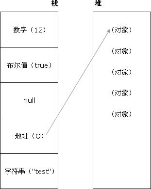

<!DOCTYPE>声明位于位于HTML文档中的第一行，处于 <html> 标签之前。告知浏览器的解析器用什么文档标准解析这个文档。DOCTYPE不存在或格式不正确会导致文档以兼容模式呈现。
标准模式的排版 和JS运作模式都是以该浏览器支持的最高标准运行。在兼容模式中，页面以宽松的向后兼容的方式显示,模拟老式浏览器的行为以防止站点无法工作。
HTML5 不基于 SGML，因此不需要对DTD进行引用，但是需要doctype来规范浏览器的行为（让浏览器按照它们应该的方式来运行）；
而HTML4.01基于SGML,所以需要对DTD进行引用，才能告知浏览器文档所使用的文档类型。
首先：CSS规范规定，每个元素都有display属性，确定该元素的类型，每个元素都有默认的display值，如div的display默认值为“block”，则为“块级”元素；span默认display属性值为“inline”，是“行内”元素。
（1）行内元素有：a b span img input select strong（强调的语气）
（2）块级元素有：div ul ol li dl dt dd h1 h2 h3 h4…p
（3）常见的空元素： br hr img input link meta
鲜为人知的是： area base col command embed keygen param source track wbr
（1）link属于XHTML标签，除了加载CSS外，还能用于定义RSS, 定义rel连接属性等作用；而@import是CSS提供的，只能用于加载CSS;
（2）页面被加载的时，link会同时被加载，而@import引用的CSS会等到页面被加载完再加载;
（3）import是CSS2.1 提出的，只在IE5以上才能被识别，而link是XHTML标签，无兼容问题;
主要分成两部分：渲染引擎(layout engineer或Rendering Engine)和JS引擎。
渲染引擎：负责取得网页的内容（HTML、XML、图像等等）、整理讯息（例如加入CSS等），以及计算网页的显示方式，然后会输出至显示器或打印机。浏览器的内核的不同对于网页的语法解释会有不同，所以渲染的效果也不相同。所有网页浏览器、电子邮件客户端以及其它需要编辑、显示网络内容的应用程序都需要内核。
JS引擎则：解析和执行javascript来实现网页的动态效果。
最开始渲染引擎和JS引擎并没有区分的很明确，后来JS引擎越来越独立，内核就倾向于只指渲染引擎。
Trident内核：IE,MaxThon,TT,The World,360,搜狗浏览器等。[又称MSHTML]
Gecko内核：Netscape6及以上版本，FF,MozillaSuite/SeaMonkey等
Presto内核：Opera7及以上。 [Opera内核原为：Presto，现为：Blink;]
Webkit内核：Safari,Chrome等。 [ Chrome的：Blink（WebKit的分支）]
绘画 canvas;
用于媒介回放的 video 和 audio 元素;
本地离线存储 localStorage 长期存储数据，浏览器关闭后数据不丢失;
sessionStorage 的数据在浏览器关闭后自动删除;
语意化更好的内容元素，比如 article、footer、header、nav、section;
表单控件，calendar、date、time、email、url、search;
新的技术webworker, websocket, Geolocation;
纯表现的元素：basefont，big，center，font, s，strike，tt，u;
对可用性产生负面影响的元素：frame，frameset，noframes；
IE8/IE7/IE6支持通过document.createElement方法产生的标签，
可以利用这一特性让这些浏览器支持HTML5新标签，
浏览器支持新标签后，还需要添加标签默认的样式。
当然也可以直接使用成熟的框架、比如html5shim;
用正确的标签做正确的事情。
html语义化让页面的内容结构化，结构更清晰，便于对浏览器、搜索引擎解析;
即使在没有样式CSS情况下也以一种文档格式显示，并且是容易阅读的;
搜索引擎的爬虫也依赖于HTML标记来确定上下文和各个关键字的权重，利于SEO;
使阅读源代码的人对网站更容易将网站分块，便于阅读维护理解。
在用户没有与因特网连接时，可以正常访问站点或应用，在用户与因特网连接时，更新用户机器上的缓存文件。
原理：HTML5的离线存储是基于一个新建的.appcache文件的缓存机制(不是存储技术)，通过这个文件上的解析清单离线存储资源，这些资源就会像cookie一样被存储了下来。之后当网络在处于离线状态下时，浏览器会通过被离线存储的数据进行页面展示。
如何使用：
1、页面头部像下面一样加入一个manifest的属性；
2、在cache.manifest文件的编写离线存储的资源；
3、在离线状态时，操作window.applicationCache进行需求实现。
在线的情况下，浏览器发现html头部有manifest属性，它会请求manifest文件，如果是第一次访问app，那么浏览器就会根据manifest文件的内容下载相应的资源并且进行离线存储。如果已经访问过app并且资源已经离线存储了，那么浏览器就会使用离线的资源加载页面，然后浏览器会对比新的manifest文件与旧的manifest文件，如果文件没有发生改变，就不做任何操作，如果文件改变了，那么就会重新下载文件中的资源并进行离线存储。
离线的情况下，浏览器就直接使用离线存储的资源。
cookie是网站为了标示用户身份而储存在用户本地终端（Client Side）上的数据（通常经过加密）。
cookie数据始终在同源的http请求中携带（即使不需要），记会在浏览器和服务器间来回传递。
sessionStorage和localStorage不会自动把数据发给服务器，仅在本地保存。
cookie数据大小不能超过4k。
sessionStorage和localStorage 虽然也有存储大小的限制，但比cookie大得多，可以达到5M或更大。
localStorage:存储持久数据，浏览器关闭后数据不丢失除非主动删除数据；
sessionStorage:数据在当前浏览器窗口关闭后自动删除。
cookie:设置的cookie过期时间之前一直有效，即使窗口或浏览器关闭
iframe会阻塞主页面的Onload事件；
搜索引擎的检索程序无法解读这种页面，不利于SEO;
iframe和主页面共享连接池，而浏览器对相同域的连接有限制，所以会影响页面的并行加载。
使用iframe之前需要考虑这两个缺点。如果需要使用iframe，最好是通过javascript动态给iframe添加src属性值，这样可以绕开以上两个问题。
给不想要提示的 form 或某个 input 设置为 autocomplete=off。
WebSocket、SharedWorker;
也可以调用localstorge、cookies等本地存储方式;
localstorge另一个浏览上下文里被添加、修改或删除时，它都会触发一个事件，我们通过监听事件，控制它的值来进行页面信息通信；
注意quirks：Safari在无痕模式下设置localstorge值时会抛出 QuotaExceededError 的异常；
Adobe Flash Socket;
ActiveX HTMLFile (IE);
l基于 multipart 编码发送 XHR ;
基于长轮询的 XHR;
通过 visibilityState 的值检测页面当前是否可见，以及打开网页的时间等;
在页面被切换到其他后台进程的时候，自动暂停音乐或视频的播放；
<div style="height:1px;overflow:hidden;background:red"></div>
区分用户是计算机还是人的公共全自动程序。可以防止恶意破解密码、刷票、论坛灌水；
有效防止黑客对某一个特定注册用户用特定程序暴力破解方式进行不断的登陆尝试。
有两种：IE 盒子模型、W3C 盒子模型；
盒模型： 内容(content)、填充(padding)、边界(margin)、 边框(border)；
区 别：IE的content部分把border和padding计算了进去;
可继承的样式： font-size font-family color, UL LI DL DD DT;
不可继承的样式：border padding margin width height ;
p:first-of-type,选择属于其父元素的首个p元素的每个p元素。
p:last-of-type,选择属于其父元素的最后p元素的每个p元素。
p:only-of-type,选择属于其父元素唯一的p元素的每个p元素。
p:only-child,选择属于其父元素的唯一子元素的每个p元素。
p:nth-child(2),选择属于其父元素的第二个子元素的每个p元素。
:after,在元素之后添加内容,也可以用来做清除浮动。
:before,在元素之前添加内容,也可以用来做清除浮动。
absolute：生成绝对定位的元素，相对于值不为static的第一个父元素进行定位。
fixed（老IE不支持）：生成绝对定位的元素，相对于浏览器窗口进行定位。
relative：生成相对定位的元素，相对于其正常位置进行定位。
static：默认值。没有定位，元素出现在正常的流中（忽略 top, bottom, left, right z-index 声明）。
inherit：规定从父元素继承 position 属性的值。
新增各种CSS选择器 （: not(.input)：所有 class 不是“input”的节点）
圆角 （border-radius:8px）
多列布局 （multi-column layout）
阴影和反射 （Shadow\Reflect）
文字特效 （text-shadow、）
文字渲染 （Text-decoration）
线性渐变 （gradient）
旋转 （transform）
增加了旋转,缩放,定位,倾斜,动画，多背景 transform:\scale(0.85,0.90)\ translate(0px,-30px)\ skew(-9deg,0deg)\Animation；
*png24位的图片在iE6浏览器上出现背景，解决方案是做成PNG8
*浏览器默认的margin和padding不同。解决方案是加一个全局的*{margin:0;padding:0;}来统一。
*多IE6双边距bug:块属性标签float后，又有横行的margin情况下，在ie6显示margin比设置的大。
解决方案是在float的标签样式控制中加入——_display:inline;将其转化为行内属性。
*IE下,可以使用获取常规属性的方法来获取自定义属性,也可以使用getAttribute(),获取自定义属性;Firefox下,只能使用getAttribute(),获取自定义属性。
解决方法:统一通过getAttribute()获取自定义属性。
*IE下,even对象有x,y属性,但是没有pageX,pageY属性,Firefox下,event对象有pageX,pageY属性,但是没有x,y属性。
解决方法：（条件注释）缺点是在IE浏览器下可能会增加额外的HTTP请求数。
*Chrome中文界面下默认会将小于12px的文本强制按照12px 显示
解决方案:可通过加入CSS属性-webkit-text-size-adjust: none;解决。
*增超链接访问过后hover样式就不出现了被点击访问过的超链接样式不在具有hover和active了。
解决方案:解决方法是改变CSS属性的排列顺序: L-V-H-A : a:link {} a:visited {} a:hover {} a:active {}
行框的排列会受到中间空白（回车\空格）等的影响，因为空格也属于字符,这些空白也会被应用样式，占据空间，所以会有间隔，把字符大小设为0，就没有空格了。
无论属于哪种，都要先找到其祖先元素中最近的 position 值不为 static 的元素，然后再判断：
1、若此元素为 inline 元素，则 containing block 为能够包含这个元素生成的第一个和最后一个inline box的 padding box (除 margin, border 外的区域) 的最小矩形；
2、否则,则由这个祖先元素的 padding box 构成。
3、如果都找不到，则为 initial containing block。
补充：
1. static(默认的)/relative：简单说就是它的父元素的内容框（即去掉padding的部分）
2. absolute: 向上找最近的定位为absolute/relative的元素
3. fixed: 它的containing block一律为根元素(html/body)，根元素也是initial containing block
多数显示器默认频率是60Hz，即1秒刷新60次，所以理论上最小间隔为1/60＊1000ms ＝ 16.7ms
如果静态文件都放在主域名下，那静态文件请求的时候都带有的cookie的数据提交给server的，非常浪费流量，所以不如隔离开。
因为cookie有域的限制，因此不能跨域提交请求，故使用非主要域名的时候，请求头中就不会带有cookie数据， 这样可以降低请求头的大小，降低请求时间，从而达到降低整体请求延时的目的。
同时这种方式不会将cookie传入WebServer，也减少了Web Server对cookie的处理分析环节，提高了webserver的http请求的解析速度。
预处理器例如：LESS、Sass、Stylus，用来预编译Sass或less，增强了css代码的复用性， 还有层级、mixin、变量、循环、函数等，具有很方便的UI组件模块化开发能力，极大的提高工作效率。
后处理器例如：PostCSS，通常被视为在完成的样式表中根据CSS规范处理CSS，让其更有效；目前最常做的 是给CSS属性添加浏览器私有前缀，实现跨浏览器兼容性的问题。
Undefined、Null、Boolean、Number、String
Object 是 JavaScript 中所有对象的父对象
数据封装类对象：Object、Array、Boolean、Number 和 String
其他对象：Function、Arguments、Math、Date、RegExp、Error
1.不要在同一行声明多个变量。
2.请使用 ===/!==来比较true/false或者数值
3.使用对象字面量替代new Array这种形式
4.不要使用全局函数。
5.Switch语句必须带有default分支
6.函数不应该有时候有返回值，有时候没有返回值。
7.For循环必须使用大括号
8.If语句必须使用大括号
9.for-in循环中的变量应该使用var关键字明确限定作用域，从而避免作用域污染。
每个对象都会在其内部初始化一个属性，就是prototype(原型)，当我们访问一个对象的属性时， 如果这个对象内部不存在这个属性，那么他就会去prototype里找这个属性，这个prototype又会有自己的prototype， 于是就这样一直找下去，也就是我们平时所说的原型链的概念。
关系：instance.constructor.prototype=instance.__proto__
特点：JavaScript对象是通过引用来传递的，我们创建的每个新对象实体中并没有一份属于自己的原型副本。当我们修改原型时，与之相关的对象也会继承这一改变。
当我们需要一个属性的时，Javascript引擎会先看当前对象中是否有这个属性， 如果没有的话， 就会查找他的Prototype对象是否有这个属性，如此递推下去，一直检索到 Object 内建对象。
栈：原始数据类型（Undefined，Null，Boolean，Number、String）
堆：引用数据类型（对象、数组和函数）
两种类型的区别是：存储位置不同；
原始数据类型直接存储在栈(stack)中的简单数据段，占据空间小、大小固定，属于被频繁使用数据，所以放入栈中存储；
引用数据类型存储在堆(heap)中的对象,占据空间大、大小不固定,如果存储在栈中，将会影响程序运行的性能；引用数据类型在栈中存储了指针，该指针指向堆中该实体的起始地址。当解释器寻找引用值时，会首先检索其在栈中的地址，取得地址后从堆中获得实体
1、构造继承
2、原型继承
3、实例继承
4、拷贝继承
原型prototype机制或apply和call方法去实现较简单，建议使用构造函数与原型混合方式。
function Parent(){ this.name = 'wang'; }
function Child(){ this.age = 28; }
Child.prototype = new Parent();//继承了Parent，通过原型
var demo = new Child(); alert(demo.age); alert(demo.name);//得到被继承的属性 }
1、对象字面量的方式
2、用function来模拟无参的构造函数
3、用function来模拟参构造函数来实现（用this关键字定义构造的上下文属性）
4、用工厂方式来创建（内置对象）
5、用原型方式来创建
6、用混合方式来创建
全局函数无法查看局部函数的内部细节，但局部函数可以查看其上层的函数细节，直至全局细节。当需要从局部函数查找某一属性或方法时，如果当前作用域没有找到，就会上溯到上层作用域查找，直至全局函数，这种组织形式就是作用域链。
1、this总是指向函数的直接调用者（而非间接调用者）；
2、如果有new关键字，this指向new出来的那个对象；
3、在事件中，this指向触发这个事件的对象，特殊的是，IE中的attachEvent中的this总是指向全局对象Window；
1、this总是指向函数的直接调用者（而非间接调用者）；
2、如果有new关键字，this指向new出来的那个对象；
3、在事件中，this指向触发这个事件的对象，特殊的是，IE中的attachEvent中的this总是指向全局对象Window；
它的功能是把对应的字符串解析成JS代码并运行；
应该避免使用eval，不安全，非常耗性能（2次，一次解析成js语句，一次执行）;
由JSON字符串转换为JSON对象的时候可以用eval，var obj =eval('('+ str +')').
null:表示一个对象被定义了，值为“空值”；
undefined:表示不存在这个值。
undefined :是一个表示"无"的原始值或者说表示"缺少值"，就是此处应该有一个值，但是还没有定义。当尝试读取时会返回 undefined； 例如变量被声明了，但没有赋值时，就等于undefined
null : 是一个对象(空对象, 没有任何属性和方法),例如作为函数的参数，表示该函数的参数不是对象；注意：在验证null时，一定要使用 === ，因为 == 无法分别 null 和 undefined
[1, NaN, NaN] 因为 parseInt 需要两个参数 (val, radix)，其中 radix 表示解析时用的基数,map 传了 3 个 (element, index, array)，对应的 radix 不合法导致解析失败。
1. 我们在网页中的某个操作（有的操作对应多个事件）。例如：当我们点击一个按钮就会产生一个事件。是可以被 JavaScript 侦测到的行为。
2. 事件处理机制：IE是事件冒泡、Firefox同时支持两种事件模型，也就是：捕获型事件和冒泡型事件；
3. ev.stopPropagation();（旧ie的方法 ev.cancelBubble = true;）
闭包是指有权访问另一个函数作用域中变量的函数，创建闭包的最常见的方式就是在一个函数内创建另一个函数，通过另一个函数访问这个函数的局部变量,利用闭包可以突破作用链域，将函数内部的变量和方法传递到外部。
闭包的特性：
1.函数内再嵌套函数
2.内部函数可以引用外层的参数和变量
3.参数和变量不会被垃圾回收机制回收
use strict是一种ECMAscript 5 添加的（严格）运行模式,这种模式使得 Javascript 在更严格的条件下运行,使JS编码更加规范化的模式,消除Javascript语法的一些不合理、不严谨之处，减少一些怪异行为。
默认支持的糟糕特性都会被禁用，比如不能用with，也不能在意外的情况下给全局变量赋值;
全局变量的显示声明,函数必须声明在顶层，不允许在非函数代码块内声明函数,arguments.callee也不允许使用；
消除代码运行的一些不安全之处，保证代码运行的安全,限制函数中的arguments修改，严格模式下的eval函数的行为和非严格模式的也不相同;
提高编译器效率，增加运行速度；
为未来新版本的Javascript标准化做铺垫。
1、创建一个空对象，并且 this 变量引用该对象，同时还继承了该函数的原型。
2、属性和方法被加入到 this 引用的对象中。
3、新创建的对象由 this 所引用，并且最后隐式的返回 this 。
hasOwnProperty
javaScript中hasOwnProperty函数方法是返回一个布尔值，指出一个对象是否具有指定名称的属性。此方法无法检查该对象的原型链中是否具有该属性；该属性必须是对象本身的一个成员。使用方法：
使用方法：
object.hasOwnProperty(proName),其中参数object是必选项。一个对象的实例,proName是必选项。一个属性名称的字符串值。
如果 object 具有指定名称的属性，那么JavaScript中hasOwnProperty函数方法返回 true，反之则返回 false。
SON(JavaScript Object Notation) 是一种轻量级的数据交换格式,它是基于JavaScript的一个子集。数据格式简单, 易于读写, 占用带宽小
JSON字符串转换为JSON对象:
var obj =eval('('+ str +')');
var obj = str.parseJSON();
var obj = JSON.parse(str);
JSON对象转换为JSON字符串：
var last=obj.toJSONString();
var last=JSON.stringify(obj);
defer和async、动态创建DOM方式（用得最多）、按需异步载入js
ajax的全称：Asynchronous Javascript And XML,异步传输+js+xml,所谓异步，在这里简单地解释就是：向服务器发送请求的时候，我们不必等待结果，而是可以同时做其他的事情，等到有了结果它自己会根据设定进行后续操作，与此同时，页面是不会发生整页刷新的，提高了用户体验。
(1)创建XMLHttpRequest对象,也就是创建一个异步调用对象
(2)创建一个新的HTTP请求,并指定该HTTP请求的方法、URL及验证信息
(3)设置响应HTTP请求状态变化的函数
(4)发送HTTP请求
(5)获取异步调用返回的数据
(6)使用JavaScript和DOM实现局部刷新
同步的概念应该是来自于OS中关于同步的概念:不同进程为协同完成某项工作而在先后次序上调整(通过阻塞,唤醒等方式)。同步强调的是顺序性.谁先谁后.异步则不存在这种顺序性.
同步：浏览器访问服务器请求，用户看得到页面刷新，重新发请求,等请求完，页面刷新，新内容出现，用户看到新内容,进行下一步操作。
异步：浏览器访问服务器请求，用户正常操作，浏览器后端进行请求。等请求完，页面不刷新，新内容也会出现，用户看到新内容。
jsonp、 iframe、window.name、window.postMessage、服务器上设置代理页面
Asynchronous Module Definition，异步模块定义，所有的模块将被异步加载，模块加载不影响后面语句运行。所有依赖某些模块的语句均放置在回调函数中。
区别：
1. 对于依赖的模块，AMD 是提前执行，CMD 是延迟执行。不过 RequireJS 从 2.0 开始，也改成可以延迟执行（根据写法不同，处理方式不同）。CMD 推崇 as lazy as possible.
2. CMD 推崇依赖就近，AMD 推崇依赖前置。
call 方法可以用来代替另一个对象调用一个方法,apply应用某一对象的一个方法，用另一个对象替换当前对象。
传递参数的方式。用法上不同，主要是参数不完全同
*jQuery是一个js库，主要提供的功能是选择器，属性修改和事件绑定等等。
*jquery 中如何将数组转化为json字符串，然后再转化回来？
内存泄漏指任何对象在您不再拥有或需要它之后仍然存在,垃圾回收器定期扫描对象，并计算引用了每个对象的其他对象的数量。如果一个对象的引用数量为 0（没有其他对象引用过该对象），或对该对象的惟一引用是循环的，那么该对象的内存即可回收。=
setTimeout 的第一个参数使用字符串而非函数的话，会引发内存泄漏,闭包、控制台日志、循环（在两个对象彼此引用且彼此保留时，就会产生一个循环）
function commafy(num) {
num = num + '';
var reg = /(-?d+)(d{3})/;
if(reg.test(num)){
num = num.replace(reg, '$1,$2');}
return num;}
功能检测、userAgent特征检测
两等号判等，会在比较时进行类型转换；
三等号判等(判断严格)，比较时不进行隐式类型转换,（类型不同则会返回false）；
Object.is 在三等号判等的基础 上特别处理了 NaN 、-0 和 +0 ，保证 -0 和 +0 不再相同，但 Object.is(NaN, NaN) 会返回 true.
Object.is 应被认为有其特殊 的用途，而不能用它认为它比其它的相等对比更宽松或严格。
1、事件不同之处：
触发事件的元素被认为是目标（target）。而在 IE 中，目标包含在 event 对象的 srcElement 属性；
获取字符代码、如果按键代表一个字符（shift、ctrl、alt除外），IE 的 keyCode 会返回字符代码（Unicode），DOM 中按键的代码和字符是分离的，要获取字符代码，需要使用 charCode 属性；
阻止某个事件的默认行为，IE 中阻止某个事件的默认行为，必须将 returnValue 属性设置为 false，Mozilla 中，需要调用 preventDefault() 方法；
停止事件冒泡，IE 中阻止事件进一步冒泡，需要设置 cancelBubble 为 true，Mozzilla 中，需要调用 stopPropagation()；
（优点）因为Node是基于事件驱动和无阻塞的，所以非常适合处理并发请求， 因此构建在Node上的代理服务器相比其他技术实现（如Ruby）的服务器表现要好得多。 此外，与Node代理服务器交互的客户端代码是由javascript语言编写的， 因此客户端和服务器端都用同一种语言编写，这是非常美妙的事情。
（缺点）Node是一个相对新的开源项目，所以不太稳定，它总是一直在变， 而且缺少足够多的第三方库支持。看起来，就像是Ruby/Rails当年的样子。
详细版：
1、浏览器会开启一个线程来处理这个请求，对 URL 分析判断如果是 http 协议就按照 Web 方式来处理;
2、调用浏览器内核中的对应方法，比如 WebView 中的 loadUrl 方法;
3、通过DNS解析获取网址的IP地址，设置 UA 等信息发出第二个GET请求;
4、进行HTTP协议会话，客户端发送报头(请求报头);
5、进入到web服务器上的 Web Server，如 Apache、Tomcat、Node.JS 等服务器;
6、进入部署好的后端应用，如 PHP、Java、JavaScript、Python 等，找到对应的请求处理;
7、处理结束回馈报头，此处如果浏览器访问过，缓存上有对应资源，会与服务器最后修改时间对比，一致则返回304;
8、浏览器开始下载html文档(响应报头，状态码200)，同时使用缓存;
9、文档树建立，根据标记请求所需指定MIME类型的文件（比如css、js）,同时设置了cookie;
10、页面开始渲染DOM，JS根据DOM API操作DOM,执行事件绑定等，页面显示完成。